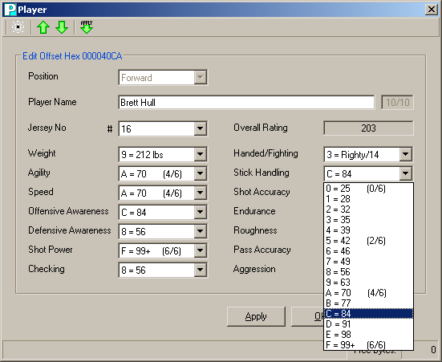

The 0-15 ratings hack and the base weight for different eras hack both require NOSE version 1.2d or higher to properly display the new ratings and weights. This version also includes support for 32-team NHL 94 ROMs.

Player ratings go from 0-F (F=15)
Note that when you upgrade a ROM to 0-15 ratings, the players will still be rated 0-6, so you'll have to re-rate them in NOSE.
I map them like so:
Also, check out the player weights in NOSE if you made a retro or modern ROM.
There is one 'small' issue, though: I can not update the Overall rating formula in NOSE, so players end up with really high Overall ratings. For example, in the image above, Brett Hull is rated 203. In the ROM, the rating will be correct, though.
Mario Lemieux, when translated to 0-15 ratings, is rated 250 in NOSE. 250/2.5 = 100.
* In the ROM, ratings under 50 are on a different scale, one that decreases half as fast as normal.
** In NOSE, ratings under 50 are also on the different scale!